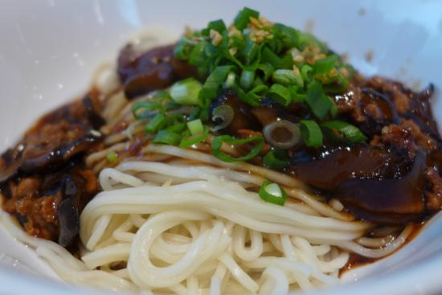

#5 - NOODLE WITH MINCED PORK BEAN SAUCE- 炸醬麵
This is a favorite lunch in my household. I make it almost every week. When we sit down to eat, each of us will has our own personal hot sauce with different flavor and degree of spiciness.

INGREDIENTS:
- 1 cucumber
- 200g dry noodle
- 200g minced pork
- 1-Cup chopped vegetable (onion, carrot, celery string beans etc.)
- 1 TBSP cooking wine
- 1 TBSP potato starch (or corn starch) mix with ¼ Cup water for thickening
SAUCE:
- 2TBSP dark soy sauce
- 1 ½ TBSP bean paste
- 1 TBSP hoi sin sauce
- 1 tsp sugar
- 180ml water
Directions:
- Cook the noodle per package instruction.
- Cut the cucumber into fine julienne. Set aside.
- Heat up 2 TBSP oil in frying pan, put in the minced pork.
- Sauté the minced pork for a few min, add cooking wine. Remove and set aside.
- Add a bit more oil in the frying pan, put in the chopped vegetable and sauté for a few minutes.
- Add in the meat, and all the ingredients for the sauce.
- Bring to boil, and then let it simmer for 5 minutes.
- Add the potato starch mixture while stirring to thicken the sauce.
- Put noodle in a bowl, top with minced pork and cucumber.
- Serve with personal favorite hot sauce.
(Serves 1 person)